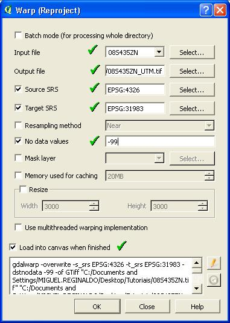

|
|
SLICER |
|
|
||||||||||||||||||||||||||
|
|
|||||||||||||||||||||||||||||
|
3 – Exemplo de criação de um Mapa de Classes de Relevo, utilizando passos variáveis |
|||||||||||||||||||||||||||||
|
Aproveitando o MDE de altitude 08S435ZN.tif do exemplo 01, obtido através do endereço eletrônico http://www.webmapit.com.br/inpe/topodata, vamos a partir deste criar uma grade de declividade com valores dos pixels em porcentagem.
Antes de continuarmos devemos trocar a projeção de nossa imagem SRTM que está em lat/lon, para o sistema de coordenadas UTM.
Informe o arquivo de entrada “08S435ZN.tif” e o arquivo de saída que iremos denominar de “ 08S435ZN_UTM.tif”. Em “Source SRC”, vamos informar o sistema de coordenadas do arquivo de entrada, no caso WSG84 (EPSG:4326). Em “Target SRC” informe o sistema de coordenadas do arquivo de saída, neste caso será o SIRGAS 2000 / UTM 23S. Digite -99 para “No data values” e mantenha “Load into canvas when finished”. Finalmente, clique no botão “OK” para realizar a conversão e, se tudo der certo, nosso raster será adicionado ao painel de camadas do QGIS, já em UTM.

Agora podemos transformar nossa grade de altitude (SRTM) em uma grade de declividade em porcentagem.
Com a janela DEM(Terrain models) informe o nome do arquivo de saída, “08S435N_UTM.tif”, em seguida o arquivo de saída “Declivity.tif”. Na caixa de seleção “Mode” selecione a opção “Slope”. Mantenha a opção “Slope expressed as percent (instead of as degrees) Mantenha a opção “Load into canvas when finished” marcada. Finalmente, clique no botão “OK”, para iniciar o processamento. Ao final, teremos o raster de declividade adicionado ao painel de camadas.
Podemos, agora, utilizar o Plugin SLICER clicando diretamente no botão da barra de ferramenta dos complementos.
Para podermos realizar o fatiamento da imagem vamos seguir os passos conforme sugerido na Figura, abaixo:
1° - Localize o nome do arquivo raster de entrada que queremos fatiar, no caso, “Declivity.tif”; 2° - Informe o nome do arquivo raster de saída, no caso, “Classes_Relief.tif”; 3° - Mantenha a opção “Add To Raster Layers Panel” marcada para adicionar o raster de saída ao painel de camadas do QGIS; 4° - Mantenha a opção “Compress Raster” marcada, para comprimir o arquivo de saída, evitando desperdício de espaço no disco rígido; 5° - Verifique os valores mínimo e máximo dos pixels da imagem, referentes à altitude; 6° - Neste exemplo o tipo de passo (Step) será a opção “Variable”, para obtermos fatias com intervalos diferentes. No caso, vamos utilizar o fatiamento, proposto por LEPSCH et al., 1991, adaptado, para as classes de declividade:
7° - Para inserir a primeira Classe de Declividade (fatia), no campo “Initial” digite o valor inferior da Classe de Declividade, no caso, 0 %; 8° - No campo “End” digite um valor final do intervalo da Classe de Declividade, ou seja, 2 %; 9° - Clique no botão “Add” para adicionar a primeira Classe de Declividade (fatia); Repita os passos de 7 a 8, para inserir as demais classes de declividade, na lista de fatias; 10° - Você pode verificar as fatias que foram adicionadas na caixa de listagem, bem como pode remover qualquer fatia marcando a caixa de seleção à esquerda de cada fatia e na sequência clicar no botão “Remove”; 11° - Por fim, clique no botão “Slice” para iniciar o processo de fatiamento.
Irá aparecer uma caixa de diálogo informando que o processo foi bem sucedido, clique no botão “OK” e depois na janela do Slice clique no botão “Close”, para fechá-la.
Observe que o nosso mapa de classes de relevo foi adicionado ao painel de camadas.
Agora, vamos colorir o nosso mapa. Entre na janela de propriedades da camada e na guia de estilo faça a configuração descrito na figura abaixo:
1° - Na caixa de seleção “Render type”, escolha a opção “Sigleband pseudocolor”; 2° - Marque a opção “Min/Max”; 3° - Clique no botão “Load”; 4° - Na caixa de seleção “Mode” selecione Equal interval”; 5° - Em “Classes” digite o valor 7, referente ao número de classes (fatias); 6° - Clique no botão “Classify”; 7° - Na caixa de listagem com as fatias, altere os valores das etiquetas e as cores, conforme ilustrado; 8° - Clique no botão “Apply”; 9° - Finalmente, clique no botão “OK”.
Veja como ficou o nosso mapa:
|
|||||||||||||||||||||||||||||
|
|
|
|
|||||||||||||||||||||||||||